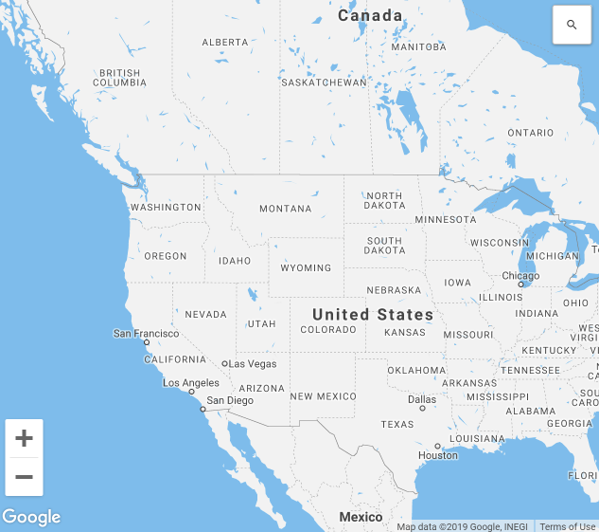
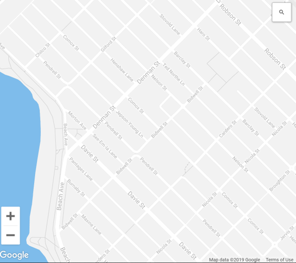
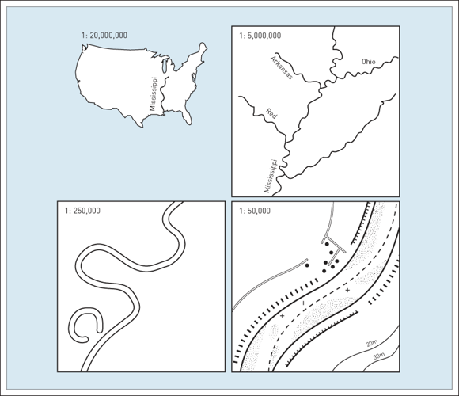
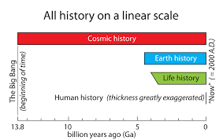
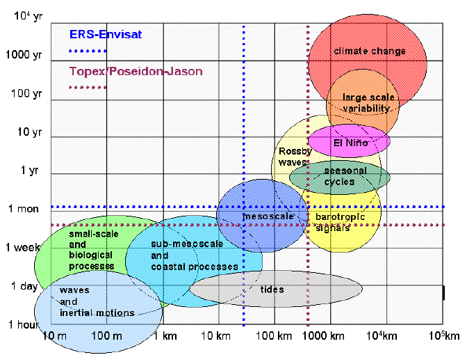

Map Scale
Map scale is the Ratio of units on the map to units in the real world.
Small Scale
Zoomed out, large area, more generalization, less detail.
Large Scale
Zoomed in, small area, more detail, less generalization.
Scale
All maps require simplification of real world features, amount depends on map scale:
-Smaller scale maps require more generalization.
-Larger scale maps can include more detail.

Time Scale
Map scale isn't all were concerned with
Time scale is important too!
Comparison of Different Time Scales
Time Scale
Meteorologic Time Scales
Geologic Time Scale

Spatial Resolution
Relates to the level of spatial detail in a dataset.
What is the smallest feature that is included in a dataset?

Same Map Scale Different Resolutions


Temporal Resolution
Relates to the level of temporal detail in a dataset.
Over what time period is the data valid?
Are there multiple observations?
Temporal Resolution
Most geologic data change on scales imperceptible to humans.
Census data is collected every 5 years.
Weather data can have observations every minute, hour, day, etc.
Eddy covariance makes 20 observations per second!
Data Resolution &. Scale
How does the scale of our analysis dictate our desired resolution?
How can data resolution limit the scale of our analysis?
Data Resolution & Scale
Ideally, we want to work with high resolution data because: ↑ resolution = ↓ generalization = ↓ uncertainty
- In reality, this isn't always practical or possible.
- So we must try to strike a balance.
Things to consider
What is the "lowest" acceptable resolution?
Things to consider
What is the "lowest" acceptable resolution?
- Smaller scale analysis won't need the same level of detail.
- Looking at national immigration patterns, maybe you only need provincial level data?
Things to consider
What are the practical limitation of using higher resolution data?
- Longer download and processing time
- Greater storage requirements
- Difficulties mapping - you can only show so much detail on a map.
Things to consider
You may want to change the scope of our analysis.